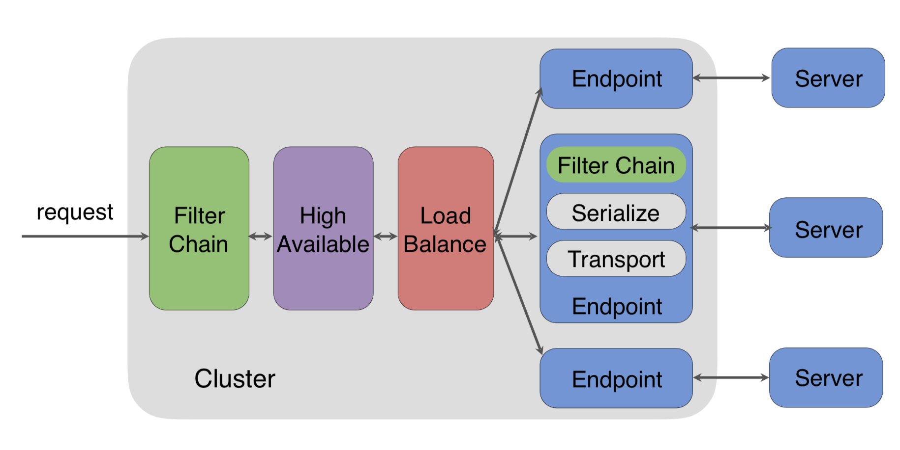
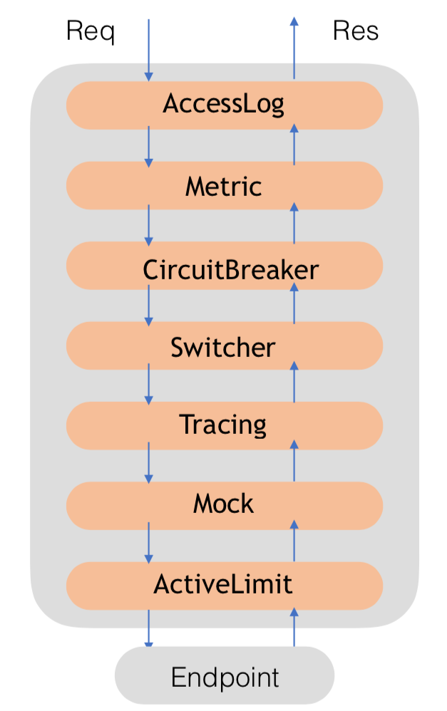
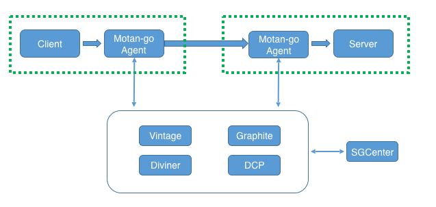
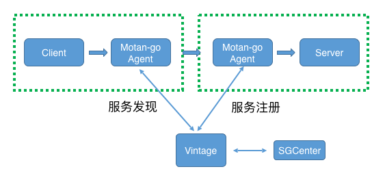
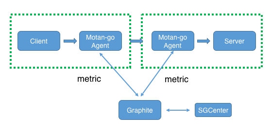
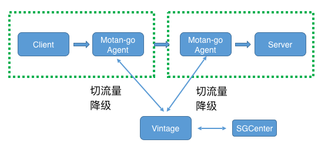
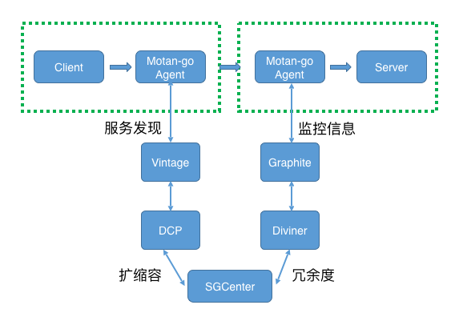
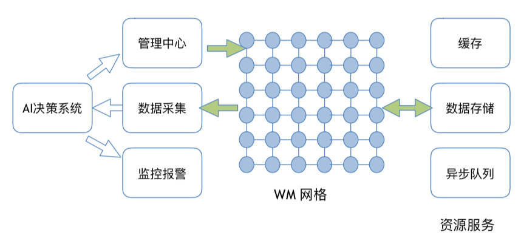

- 00 开篇词 微服务，从放弃到入门.md.html
- 01 到底什么是微服务？.md.html
- 02 从单体应用走向服务化.md.html
- 03 初探微服务架构.md.html
- 04 如何发布和引用服务？.md.html
- 05 如何注册和发现服务？.md.html
- 06 如何实现RPC远程服务调用？.md.html
- 07 如何监控微服务调用？.md.html
- 08 如何追踪微服务调用？.md.html
- 09 微服务治理的手段有哪些？.md.html
- 10 Dubbo框架里的微服务组件.md.html
- 11 服务发布和引用的实践.md.html
- 12 如何将注册中心落地？.md.html
- 13 开源服务注册中心如何选型？.md.html
- 14 开源RPC框架如何选型？.md.html
- 15 如何搭建一个可靠的监控系统？.md.html
- 16 如何搭建一套适合你的服务追踪系统？.md.html
- 17 如何识别服务节点是否存活？.md.html
- 18 如何使用负载均衡算法？.md.html
- 19 如何使用服务路由？.md.html
- 20 服务端出现故障时该如何应对？.md.html
- 21 服务调用失败时有哪些处理手段？.md.html
- 22 如何管理服务配置？.md.html
- 23 如何搭建微服务治理平台？.md.html
- 24 微服务架构该如何落地？.md.html
- 25 微服务为什么要容器化？.md.html
- 26 微服务容器化运维：镜像仓库和资源调度.md.html
- 27 微服务容器化运维：容器调度和服务编排.md.html
- 28 微服务容器化运维：微博容器运维平台DCP.md.html
- 29 微服务如何实现DevOps？.md.html
- 30 如何做好微服务容量规划？.md.html
- 31 微服务多机房部署实践.md.html
- 32 微服务混合云部署实践.md.html
- 33 下一代微服务架构Service Mesh.md.html
- 34 Istio：Service Mesh的代表产品.md.html
- 35 微博Service Mesh实践之路（上）.md.html
- 36 微博Service Mesh实践之路（下）.md.html
- 微博技术解密（上） 微博信息流是如何实现的？.md.html
- 微博技术解密（下）微博存储的那些事儿.md.html
- 结束语 微服务，从入门到精通.md.html
- 阿忠伯的特别放送 答疑解惑01.md.html
- 阿忠伯的特别放送 答疑解惑02.md.html
- 捐赠
36 微博Service Mesh实践之路（下）
专栏上一期我们聊到了微博的服务化是如何一步步走向Service Mesh之路的，可以说正是由于微博自身业务对跨语言服务调用的需求日趋强烈，才促使了Weibo Mesh的诞生，也因此乘上了Service Mesh的东风。我在前面讲过，Service Mesh主要由两部分组成，一部分是SideCar，负责服务之间请求的转发；一部分是Control Plane，负责具体的服务治理。从Weibo Mesh的实现方案来看，对应的SideCar采用的是自研的Motan-go Agent，服务治理则是通过统一服务治理中心来实现，这里面的一些思路还是和Control Plane有很大区别的。
今天我们就来聊聊Weibo Mesh实现的技术细节，看看它给业务带来了哪些收益，最后再谈谈Weibo Mesh下一步的发展方向。
Motan-go Agent
通过上一期的学习，我们知道Weibo Mesh中使用的SideCar就是Motan-go Agent，考虑到Motan-go Agent要与PHP进程部署在一起，为了减少对本机资源的占用，这里Motan-go Agent采用了Go语言来实现，它包含的功能模块请看下图。

我们拆解一下图中Motan-go Agent主要的模块，看看它们的作用是什么。
Filter Chain模块是以请求处理链的组合方式，来实现AccessLog（请求日志记录）、Metric（监控统计）、CircuitBreaker（熔断）、Switcher（降级）、Tracing（服务追踪）、Mock（单元测试）、ActiveLimit（限流）等功能。

High Available模块是用来保证高可用性，默认集成了Failover、Backup Request等故障处理手段。
Load Balance模块负载均衡，默认集成了Random、Roundrobin等负载均衡算法。
EndPoint模块的作用是封装请求来调用远程的Server端，默认可以封装Motan请求和gRPC请求。
Serialize模块负责实现不同类型的序列化方式，默认支持Simple序列化。
Server模块实现不同类型的Server，要么是采用Motan协议实现，要么是采用gRPC协议。
Motan-go Agent每个模块都是功能可扩展的，你可以在Filter Chain模块加上自己实现的Trace功能，这样请求在经过Filter Chain处理时，就会自动加载你加上的Trace功能。当然，你也可以在High Available模块添加自己实现的故障处理手段，在Load Balance模块里实现自己的负载均衡算法，在EndPoint模块封装HTTP协议的请求，在Serialize模块添加PB序列化，在Server模块实现HTTP协议等。
另外Motan-go Agent之间的通信采用的是自定义的Motan2协议，它把请求中的Meta信息与请求参数信息进行了分离，更适合对请求进行代理转发，并且默认使用了Simple序列化来对不同语言的数据进行编码，以实现跨语言服务通信。
更多关于Motan2协议和Simple序列化的介绍，你可以点击这里查看。
统一服务治理中心
专栏上一期我给你讲过，在Weibo Mesh中是通过统一服务治理平台与Motan-go Agent交互来实现服务治理功能的。对着下面这张Weibo Mesh的架构图，我们一起看一下统一服务治理平台SGCenter具体是如何与Motan-go Agent交互，来实现服务治理的各项功能的。

1.动态服务注册与发现
首先来看下统一服务治理平台是如何实现服务注册与发现的。如下图所示，在Motan-go Agent中实现了具体的服务注册与发现的逻辑，Server端进程启动时，会通过Motan-go Agent向Vintage注册中心发起注册请求，把服务注册到Vintage中。Client端发起服务调用时，会经过Motan-go Agent转发，Motan-go Agent会调用Vintage查询该服务在Vintage中的注册信息，获取到服务节点列表后，按照某一种负载均衡算法选择一个服务节点，向这个服务节点发起调用。可以通过统一服务治理平台SGCenter，调用Vintage的管理接口，执行添加或者删除服务节点等操作，Motan-go Agent会感知到服务节点的变化，获取最新的服务节点。一般在业务开发或者运维人员需要手工扩容或者缩容一批服务节点时，才会执行这个操作。

2.监控上报
再看下面这张图，Client端发起的请求经过Motan-go Agent转发时，Motan-go Agent就会在内存中统计每一次调用的耗时、成功率等信息，并且每隔固定的时间间隔将这段时间内各个服务调用的QPS、平均耗时、成功率以及P999等metric信息发送给Graphite监控系统。这样的话，通过SGCenter调用Graphite的Web API就可以获取到服务调用的信息了。

3.动态流量切换与降级
动态流量切换与降级的过程请看下面这张图。Motan-go Agent在查询Vintage中某个服务节点信息的同时也会订阅该服务的变更，这样的话就可以通过SGCenter向Vintage下发服务的切流量或者降级指令，订阅了这个服务的Motan-go Agent就会收到变更通知，如果是切流量指令，比如把调用永丰机房服务的流量都切换到土城机房，那么Motan-go Agent就会把原本发给永丰机房的请求都发给土城机房；如果是降级指令，Motan-go Agent就会停止调用这个服务。

4.自动扩缩容
服务调用时Motan-go Agent会把Server端服务调用的监控信息上报给Graphite监控系统，同时Diviner容量评估系统会实时调用Graphite以获取服务在不同区间的QPS信息以计算服务池的水位线，然后SGCenter会每隔一段时间调用Diviner来获取各个服务池的冗余度以决定是否需要扩容。假如此时服务池的冗余度不足的话，SGCenter就会调用DCP容器运维平台给服务池进行扩容，DCP完成扩容后新的服务节点就会注册到Vintage当中，这样的话订阅了该服务的Motan-go Agent就会感知到服务节点的变化，从Vintage中获取最新的服务节点信息，这就是一个服务自动扩缩容的整个流程，你可以参考下面这张图。

Weibo Mesh的收益
经过前面的讲解，相信你已经对Weibo Mesh的实现方案有了一定的了解。Weibo Mesh是在微博的业务场景下，一步步进化到今天这个架构的，它给微博的业务带来的巨大的收益，总结起来主要有以下几点：
跨语言服务化调用的能力。Weibo Mesh发展之初最首要的目的，就是想让微博内部的Motan服务化框架能够支持PHP应用与Java应用之间调用，因而开发了Motan-go Agent，并在此基础上演变成今天的Weibo Mesh。支持多种语言之间的服务化调用，有助于统一公司内部业务不同语言所采用的服务化框架，达到统一技术体系的目的。
统一服务治理能力。以微博应对突发热点事件带来的峰值流量冲击为例，为了确保首页信息流业务的稳定性，我们有针对性的研发了自动扩缩容系统。而随着微博的不断发展，不断涌现出新的业务线，比如热门微博和热搜，也同样面临着突发热点事件带来的流量冲击压力。而开发一套稳定可用的自动扩缩容系统并非一朝一夕之事，如何能够把信息流业务研发的自动扩缩容系统推广到各个业务线，是个比较棘手的问题。因为信息流业务的后端主要采用了Java语言实现，而热门微博和热搜主要采用的是PHP语言，无法直接接入自动扩缩容系统。而Weibo Mesh可以支持多种语言，将热门微博和热搜业务进行服务化改造，就可以统一接入到自动扩缩容系统，实现了公司级的统一服务治理能力。
业务无感知的持续功能更新能力。采用Motan或者Dubbo类似的传统服务化框架，一旦服务框架功能有升级就需要业务同步进行代码升级，这对大部分业务来说都是一种不愿承受的负担。而采用Weibo Mesh，添加新功能只需要升级Motan-go Agent即可，业务代码不需要做任何变更，对于业务开发人员更友好。尤其是作为公司级的服务化框架时，服务框架的升级如果跟业务系统升级绑定在一起，从我的实践经验来看，将是一件耗时费力的工作，需要协调各个业务方配合才能完成。而Weibo Mesh可以看作是服务器上部署的基础组件，它的升级与维护不需要各个业务方的参与，这样才能具备作为公司级的服务化框架推广到各个业务线的前提。
Weibo Mesh的发展规划
在微博的业务场景下，存在大量服务对缓存、数据库以及消息队列等资源的调用，如果把资源也看作是一种服务，那么Weibo Mesh不仅可以管理服务与服务之间的调用，还可以管理服务与资源之间的调用，这样的话Weibo Mesh强大的服务治理能力也能延伸到对资源的治理上，对业务来说又将解决资源治理这一大难题。另一方面，随着Weibo Mesh治理的服务越来越多，收集的数据也越来越多，利用这些数据可以挖掘一些更深层次的东西，也是Weibo Mesh未来的发展方向之一。比如，引入机器学习算法，对采集的数据进行分析，进行监控报警的优化等。

总结
今天我从Motan-go Agent和统一服务治理中心的具体实现这两个方面，给你讲解了Weibo Mesh的技术细节，你可以看到很多都是微博基于自身业务特点定制化的解决方案。对于大部分中小团队来说，除非从一开始就采用了云原生应用的部署方式，否则Istio等开源方案并不能直接拿来就用，都需要从自身的业务特征和既有技术体系出发，选择一条适合自己的Service Mesh实践之路。Weibo Mesh也因为其紧贴业务，并没有脱离实际去设计，所以才能够在微博的业务中落地生根，被证明是行之有效的架构实践，使得微博服务化体系的统一成为可能，也坚定了我们在Weibo Mesh这条路上继续走下去。
思考题
Service Mesh中业务与服务框架解耦的优秀设计思想，除了能用于服务与服务之间相互调用的场景，你认为还能应用于哪些业务场景中？
欢迎你在留言区写下自己的思考，与我一起讨论。
© 2019 - 2023 Liangliang Lee. Powered by gin and hexo-theme-book.